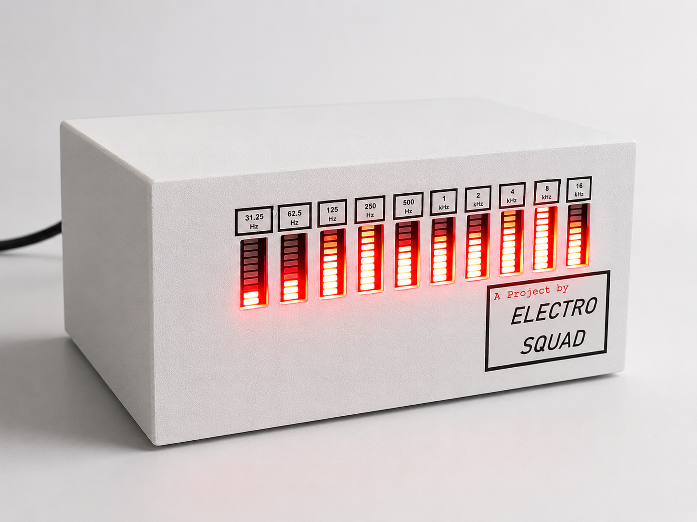

Analog Frequency Spectrum Analyzer (2025)

A fully analog 10-band audio frequency spectrum analyzer. I was responsible for the complete analog circuit design, which processes incoming audio signals through a parallel bank of active bandpass filters to isolate specific frequency ranges. The isolated AC signals from each band are passed through envelope detectors to extract their DC magnitude levels. I then designed the routing for these voltage levels to drive a sequential LED strip, translating the real-time frequency distribution into a dynamic visual display.
For more details access the GitHub repository below.